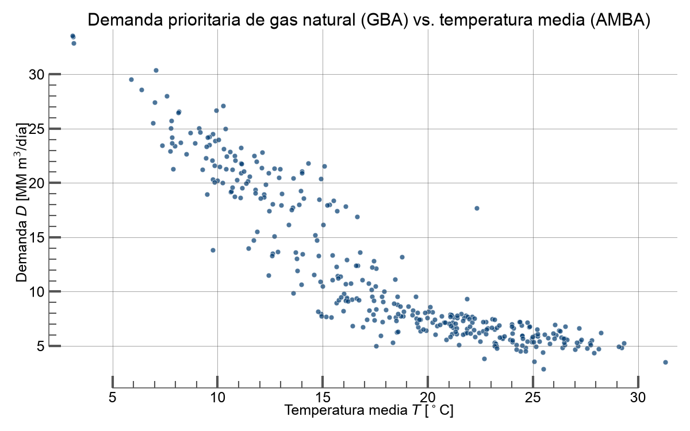
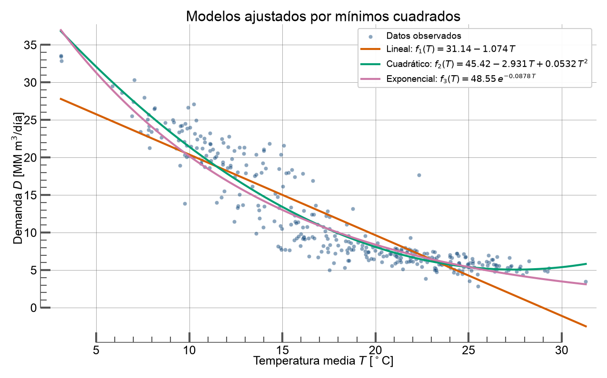
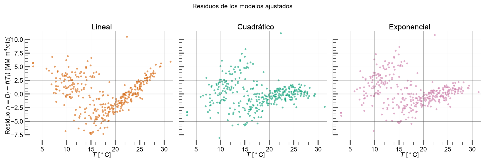

Demanda prioritaria de gas natural en función de la temperatura media diaria
Independiente — temperatura media diaria \(x_i = T_i\) [°C]
Dependiente — demanda prioritaria de gas \(y_i = D_i\) [MM m³/día]
Pares discretos observados:
datos_enargas.csv
Demanda prioritaria por licenciataria y fecha.
Para el AMBA sumamos las dos distribuidoras que abastecen la región:
registro_temperatura365d_smn.txt
\(T_{\max}\) y \(T_{\min}\) diarias por estación.
Temperatura media de cada estación:
| Fecha | T (°C) | D (MM m³/d) |
|---|---|---|
| 2025-06-15 | 7,75 | 22,95 |
| 2025-07-17 | 8,12 | 26,48 |
| 2025-09-18 | 19,44 | 9,57 |
| 2025-12-23 | 25,79 | 5,22 |
| 2026-01-24 | 27,14 | 5,02 |
| 2026-05-31 | 10,82 | 18,74 |

| \(\sum T_i\) | 6.250,89 | \(\sum D_i\) | 4.213,72 |
| \(\sum T_i^2\) | 123.882,34 | \(\sum T_iD_i\) | 61.546,62 |
| \(\sum T_i^3\) | 2.644.334,76 |
| \(\sum T_i^4\) | 59.479.524,45 |
| \(\sum T_i^2 D_i\) | 1.041.768,03 |
| \(\sum Y_i\) | 814,2272 |
| \(\sum T_i Y_i\) | 13.397,9888 |
Deshacemos el logaritmo: \(A = e^{\alpha}\)
| Modelo | SSE | RMSE | R² |
|---|---|---|---|
| Lineal | 3.384,59 | 3,105 | 0,811 |
| Cuadrático ★ | 2.039,79 | 2,411 | 0,886 |
| Exponencial | 2.315,97 | 2,569 | 0,871 |
Suma de los cuadrados de los residuos. Cuanto menor, mejor.


| Modelo | D estimada |
|---|---|
| Lineal | 22,54 |
| Cuadrático ★ | 25,37 |
| Exponencial | 24,06 |
\(T_0\) está dentro del rango observado ⇒ interpolación, no extrapolación. Es el escenario más confiable.
RMSE bajo (≈ 2,41) y residuos sin patrón cerca de \(T_0\).
¿Preguntas?